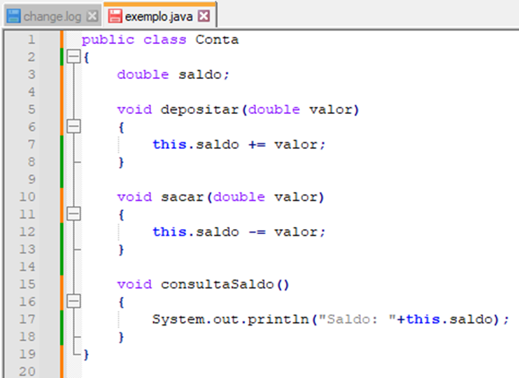
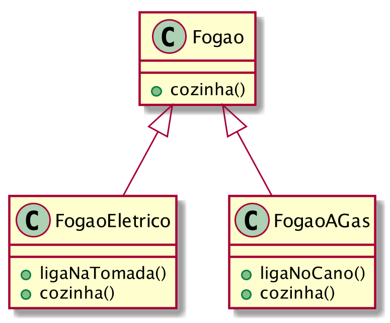
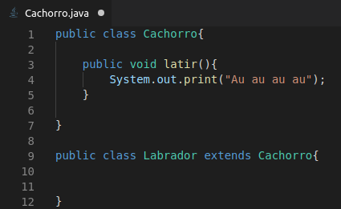

O pilar da abstração é definido como o processo de simplificar objetos complexos para que
o código seja reduzido e possua apenas informações essenciais.
Podemos tomar como exemplo um objeto denominado carro, que possui atributos como marca,
cor e modelo, e métodos como ligar, desligar e abastecer. O pilar da abstração faz com que
o desenvolvedor não foque em exibir dados irrelevantes que possam confundir o usuário, mas
sim, foque apenas em criar um código simples.
Lidar com questões como “Como o mecanismo do carro funciona?” podem atrasar a experiência
do indivíduo no momento da compra, já que tudo que ele precisa saber é que o carro funciona.
Esse pilar pode ser importante e benéfico tanto para o programador quanto para o usuário,
pois além possibilitar a criação de modelos que se parecem com o objeto da vida real,
ele permite que sejam feitas implementações internas em um objeto sem que isso altere
sua interface.

O terceiro pilar, herança, constitui-se do conceito de haver uma classe já
existente e ao criar outra, ao invés de construir o código desde o início,
aquela classe existente é utilizada como base, compartilhando assim, os mesmos
atributos e métodos.
Neste caso, as classes passam a ter um sistema de hierarquia entre si.
A classe originária é chamada de classe base, e a que herda suas características
é chamada de classe derivada. Desta maneira, as classes que derivam e recebem a
herança não são imprevisíveis e precisam apenas definir as suas características
individuais que a difere de sua classe base.

Outro exemplo seria: Uma classe derivada “profissionais” que herda as
características da classe base “humanos”. Neste caso, não seria necessário que
nessa classe derivada fosse questionado o sexo, idade e nome pois esses atributos
já estão inseridos na classe “humanos”. Sendo assim, a classe derivada se
preocuparia com coisas como a formação, o local que trabalha e etc.
